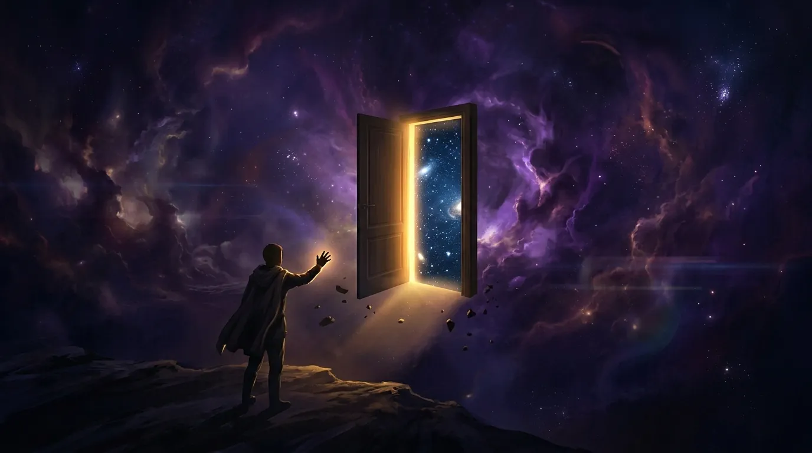
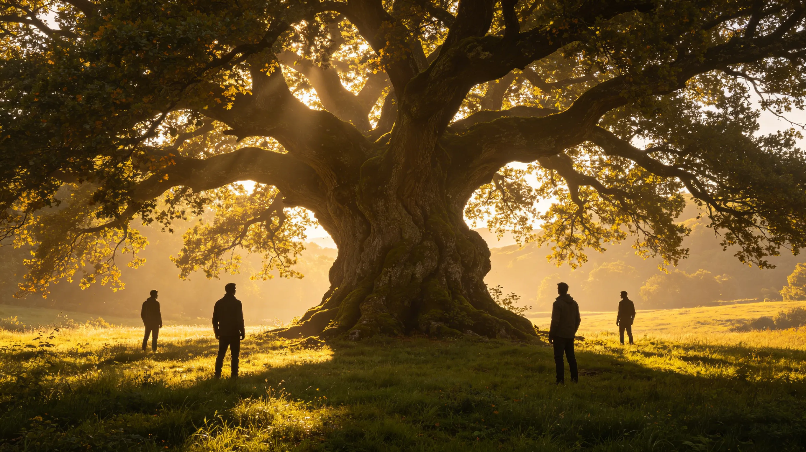
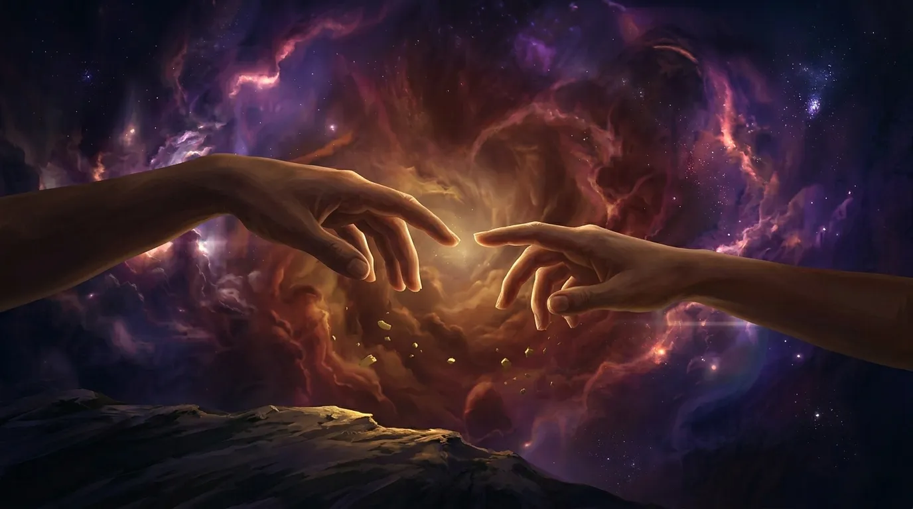
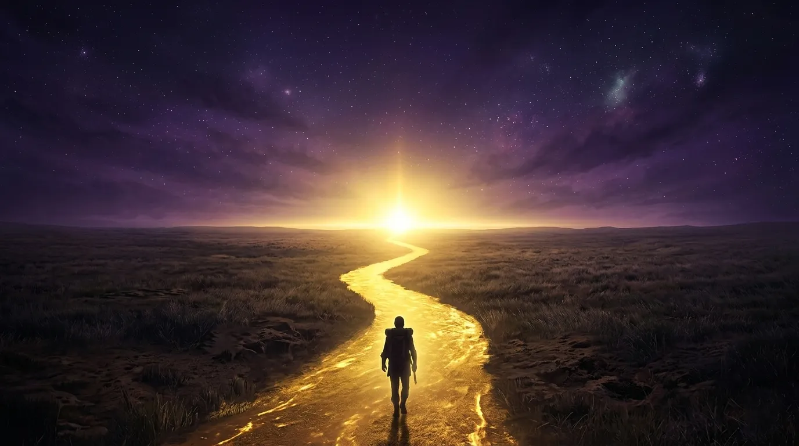
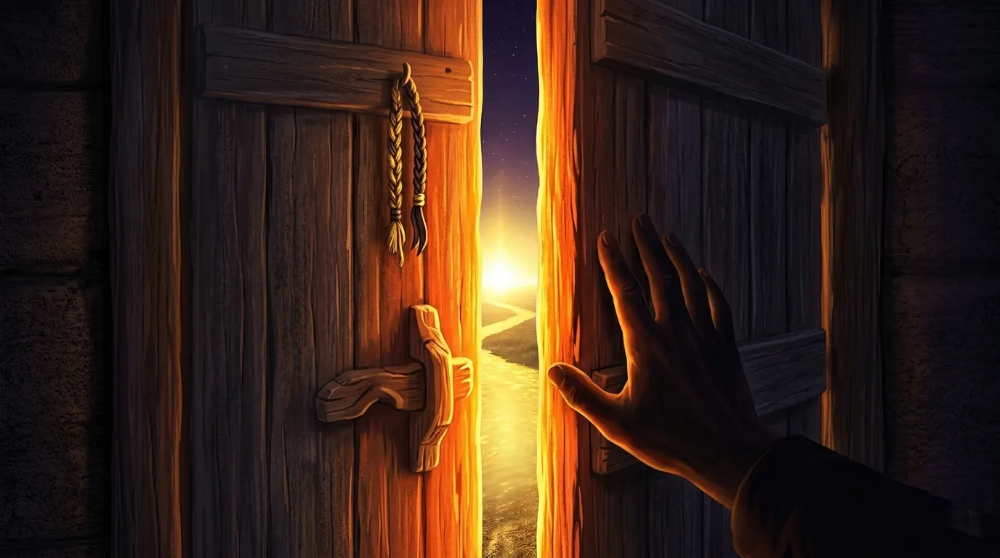
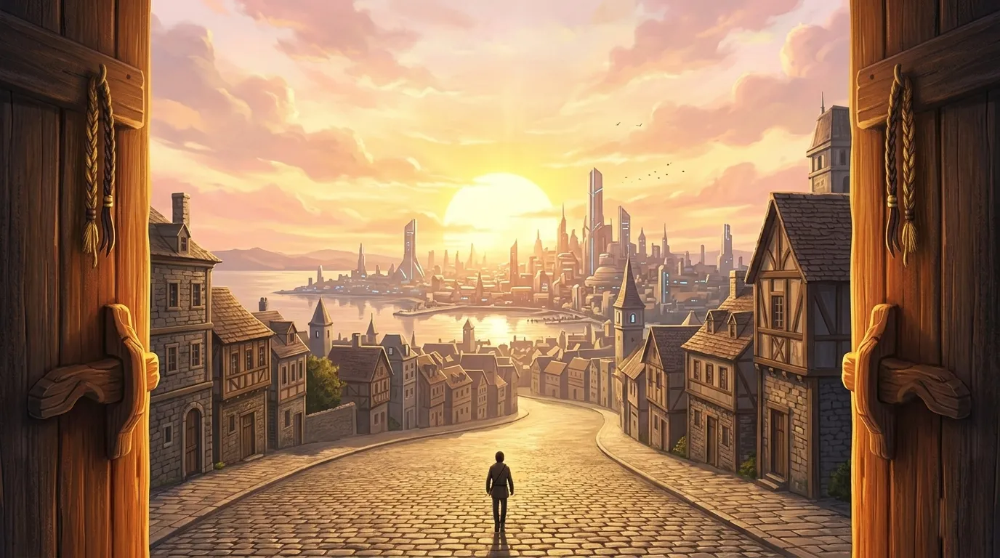

A second-person meditation on love, belonging, and finding yourself in another world.

If you were in Deepspace, you would arrive not with a bang, but with a question.
The door would open — not a real door, but something like one. A threshold between the world you know and the one that has been waiting for you. You wouldn't remember stepping through. You would just suddenly be there, standing on a street you've never seen, under a sky full of stars that feel strangely familiar.
You would feel it immediately. The weight of something. Not danger. Not fear. Something softer.
Possibility.
Deepspace would not be a place you visit. It would be a place that recognizes you. Like a memory you forgot you had. Like a dream you've been dreaming for years but could never remember when you woke up.
You are here now. And somehow, impossibly, you belong.

If you were in Deepspace, you would meet them. Not all at once. One by one. As if the universe was pacing itself, afraid of overwhelming you.
You would meet the one who waits. He would be sitting somewhere quiet — an observatory, a bench, a rooftop under a sky too large for one person. He wouldn't look up when you approached. Not because he was ignoring you. Because he has learned not to hope.
You would sit next to him. You wouldn't speak. After a long silence, he would say: "I've been waiting for someone."
And you would know, somehow, that he means you. Even though he doesn't know it yet.
You would meet the one who hides. He would be in a room full of people, but completely alone. Coat too dark. Eyes too distant. He would look at you like you were a problem he hadn't solved yet.
You wouldn't be afraid. You would see the cracks in his armor — tiny, almost invisible. You would see that he is not a monster. He is a man who forgot how to be anything else.
You would sit across from him. You wouldn't try to fix him. You would just stay.
And that would be enough.
You would meet the one who heals. He would be exhausted. He would hide it well, but you would notice — the coffee that went cold, the dark circles he thinks no one sees, the way he says "I'm fine" like a reflex.
You would bring him tea. Or just sit in the waiting room. You wouldn't ask him to talk. You would just be there.
And he would notice. He would pretend not to. But he would notice.
You would meet the one who paints. He would be surrounded by color, but somehow the color wouldn't reach him. He would paint the same sea every day, searching for something he lost a long time ago.
You would stand behind him. Watch his brush move. After a while, you would say: "It's beautiful."
He would stop. Turn to look at you. "You're the first person who didn't ask what it is."
You would smile. And he would paint you into the next one.

If you were in Deepspace, you would feel things you forgot you could feel.
You would feel the weight of silence — not as emptiness, but as presence. You would learn that sitting next to someone without speaking is not loneliness. It is intimacy.
You would feel the ache of waiting. Not the impatient kind. The kind that becomes part of you. The kind that makes you understand why someone would watch the same stars for two hundred years.
You would feel the terror of being seen. Truly seen. By someone who doesn't look away when you show them your cracks. By someone who stays.
You would feel love. Not the kind from stories. The kind from small things. A vitamin bottle left on your doorstep. A jacket draped over you while you slept. A painting of the sea that looks like your eyes. A text message that says "goodnight" when you forgot to say it first.
You would feel, for the first time in a long time, that you are not too much. Not too broken. Not too quiet. Not too anything.
You would feel that you are exactly enough.

If you were in Deepspace, you would become someone new. Not different. Just... more yourself.
You would learn to wait — not passively, but actively. You would learn that waiting is not emptiness. It is preparation. It is hope with patience.
You would learn to heal — not others, not yet. Yourself first. You would learn that you cannot pour from an empty cup. That rest is not weakness. That saying "I need help" is not surrender.
You would learn to be seen. You would stop hiding the parts of you that are messy, unfinished, still healing. You would discover that those are the parts people love most.
You would learn to love — not perfectly, not without fear, but truly. You would learn that love is not about fixing someone. It is about standing beside them while they fix themselves. And letting them stand beside you while you do the same.
You would leave Deepspace changed. Not because the world changed you. Because you finally let yourself change.

If you were in Deepspace, you would leave something behind. Not sadness. Not regret. A piece of yourself that no longer fits.
You would leave behind the fear of being too much. You would realize that the people who matter will never ask you to be smaller.
You would leave behind the belief that you have to earn love. That you have to be perfect, or useful, or impressive. You would learn that love is not a transaction. It is a gift. Freely given. Freely received.
You would leave behind the loneliness you thought was permanent. You would discover that loneliness is not the absence of people. It is the absence of being understood. And you have been understood. More than you know.
You would leave Deepspace lighter. Not because the world is lighter. Because you finally put down what you were never meant to carry.

If you were in Deepspace, you would return. Not to the same world. To the same world, but with different eyes.
You would notice things you didn't see before. The way the morning light falls on your desk. The sound of rain against your window. The small kindnesses people offer that you used to overlook.
You would carry them with you — the man who waits, the man who hides, the man who heals, the man who paints. Not as burdens. As reminders. Reminders that love is possible. That you are worthy of it. That you always were.
If you were in Deepspace, you would realize that you never really left. That Deepspace was not a place. It was a feeling. A feeling of being known. Of being chosen. Of being loved.
And that feeling does not disappear when you close the door.
It stays with you.
It becomes you.
If you were in Deepspace — you would finally see yourself the way they see you.